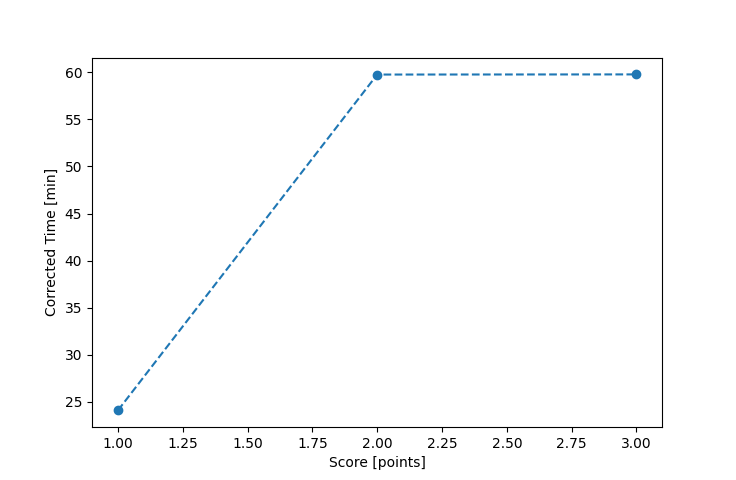

| Wind: | 2-3 (BFT) |
|---|---|
| RC: | David_BuBill_P |
| Date: | September 09, 2018 |
| Notes: | F2 Starboard |
| Rank / Score | Name | Boat | Input Time [mm:ss] | Input Offset [mm:ss] | Race Time [mm:ss] | Race Time [s] | Handicap | Corrected Time [s] | Corrected Time [mm:ss] |
|---|---|---|---|---|---|---|---|---|---|
| 1.0 | Rod_H | PUF | 34:32 | 00:00 | 34:32 | 2072 | 1.11800 | 1853 | 30:53 |
| 2.0 | Mike_F | SF | 31:49 | 00:00 | 31:49 | 1909 | 1.00400 | 1901 | 31:41 |
| 3.0 | Art_M | SWSX | 31:07 | 00:00 | 31:07 | 1867 | 0.95900 | 1947 | 32:27 |
| 4.0 | Ron_F | F5 | 32:15 | 00:00 | 32:15 | 1935 | 0.96600 | 2003 | 33:23 |
| 5.0 | Chris_E | SF | 33:40 | 00:00 | 33:40 | 2020 | 1.00400 | 2012 | 33:32 |
| 6.0 | Ella_M | LASE | 32:26 | 00:00 | 32:26 | 1946 | 0.92300 | 2108 | 35:08 |
| 7.0 | Nedra_F | SF | 35:17 | 00:00 | 35:17 | 2117 | 1.00400 | 2109 | 35:09 |
| 8.0 | Lewis_V | BCN | 34:06 | 00:00 | 34:06 | 2046 | 0.87000 | 2352 | 39:12 |
| 9.0 | Jay_H | SWSX | DNF | -- | -- | -- | -- | -- | DNF |

Application Notes:
All race results are unofficial
View source code at https://github.com/cessnao3/portsmouthracecalc/